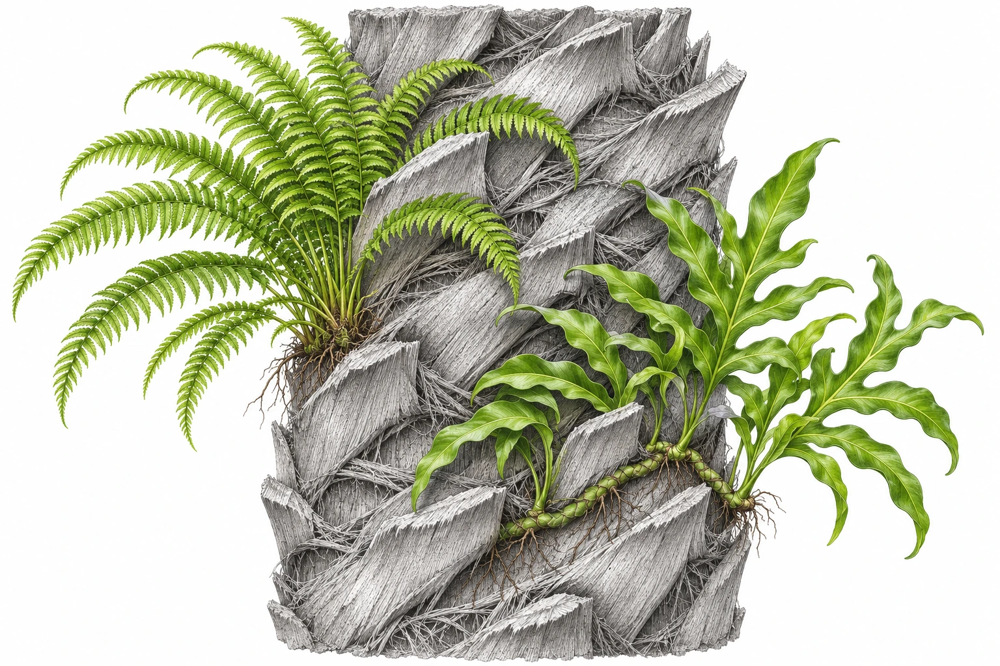

Palm 10 Researchers recorded both ferns at the base, trunk and crown of this oil palm.

Each arching frond carries rows of narrow leaflets.
Lobed fronds rise from a creeping rhizome along the bark.
Schematic reconstruction of the trunk zone. The survey records where the ferns grew. Their spacing, dimensions and attachment points in the drawing are illustrative.
Counts from Table 2 for the two selected ferns. A dash indicates no record in that zone. Other epiphytes were also present in the survey.
| Palm | Fern | Crown | Trunk | Base |
|---|---|---|---|---|
| 8 | Giant sword | >10 | – | – |
| 8 | Wart | – | >10 | – |
| 10 | Giant sword | 8 | >10 | >10 |
| 10 | Wart | 8 | >10 | >10 |
Adeleye, Akinsoji and Adeonipekun (2017), Table 2. The paper uses the name Phymatodes scolopendria for wart fern. University of Lagos field paper.
Illustration generated for this study using the botanical colour atlas as its visual reference. Oil palm Elaeis guineensis (LAG-082), giant sword fern (LAG-324) and wart fern (LAG-320). The dove is shown in flight as habitat context. A reserve patrol recorded this species in 2020. Wildlife survey, Table 2. Light exposure and moisture at this particular trunk are unknown.